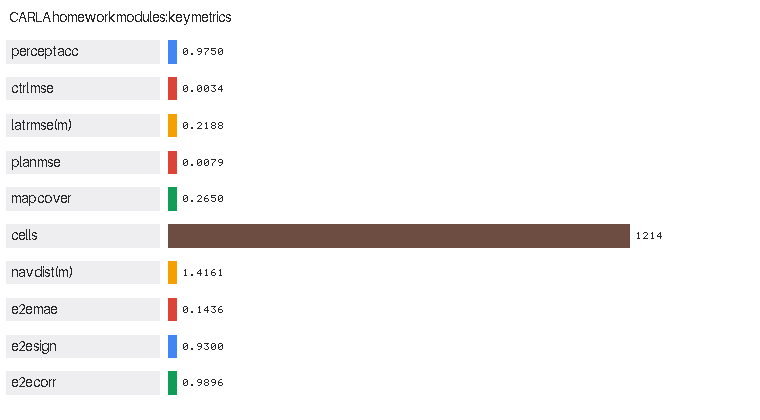
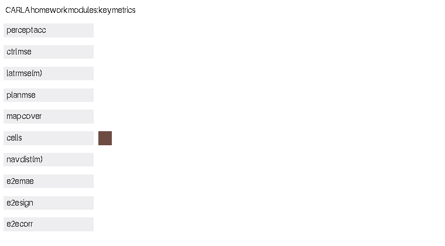

CARLA 作业综合整合与性能评价
对应课程作业五：(其他) 把前四份作业统一到一个入口，并给出可复现的量化性能评价。
1. 概述与目标
前四份作业各自是独立功能包，本模块提供两件事：
- 统一调度：一个入口拉起任意子作业，参数原样透传。
- 性能评价：真实训练并回放各模块，输出可复现的量化指标表与对比图。
代码位于 src/ground/carla_benchmark_suite/。
1.1 被整合的四个模块
| target | 功能包 | 对应任务 | 算法性质 |
|---|---|---|---|
control |
carla_keyboard_control |
任务(1) 物理仿真与键盘运动控制 | 直接构造控制量 |
perception |
carla_perception_control |
任务(2) 传感器感知与运动控制 | 感知 NN + 控制 NN |
navigation |
carla_mapping_navigation |
任务(3) 建图与导航（SLAM 同步仿真） | 规划 NN + 占用栅格 |
end_to_end |
carla_end_to_end_nn |
任务(4) 端到端模型 | 端到端 CNN |
1.2 与已有示例的区别
| 对比项 | 已有「自动驾驶演示」（ad_demo） | 本拓展模块 |
|---|---|---|
| 技术路线 | roslaunch carla_ad_demo（依赖 ros-bridge 与 scenario runner） |
CARLA Python API 直连 + 统一调度入口 |
| 是否依赖 ros-bridge | 必须编译并运行 ros-bridge | 不需要，仅需 carla Python 客户端 |
| 是否依赖 scenario runner | 需要，且必须设 SCENARIO_RUNNER_PATH |
不需要 |
| 功能范围 | 单次演示（随机路线 / 场景执行） | 统一调度 4 个子作业 + 量化性能评价 |
| 性能指标 | 无（只有运行日志） | 真实测量的精度 / 时延 / 平滑度 / 覆盖率指标表 |
| 指标可复现性 | — | 离线可复现：--benchmark 无需 CARLA 服务端 |
| 无 CARLA / 无图形界面时 | 无法运行 | --benchmark 与 --list 均可离线运行 |
1.3 与仓库中其它模块的区分
其它模块各自实现一个具体算法；本模块不实现新算法，只做两件事： 把四个功能包统一到一个入口调度，以及对它们做真实测量与横向对比。 它是唯一一个会从其它功能包导入代码并实际运行的模块。
2. 计算原理
2.1 性能评价指标定义
轨迹跟踪横向误差 RMSE（作业二）：
转向平滑度 AoS（Amount of Steering）：相邻转向指令的平均绝对变化量，越小越平滑：
转向饱和比例：转向被打到边界 的比例，过高说明控制裕度不足：
建图覆盖率：概率明显偏离 0.5（即已观测）的格子占比：
端到端回归指标（作业四）：
推理时延：单步前向的平均耗时与 P95，反映实时性：
2.2 评价方法
评测不依赖随机数造数，而是真实执行：
--benchmark:
perception : 合成数据集 → 训练感知NN与控制NN → 回放轨迹 → 量测横向误差
navigation : 合成数据集 → 训练规划NN → 激光雷达合成帧建图 + NN导航 → 量测覆盖率与导航误差
end_to_end : 合成道路图像 → 训练CNN → 量测MAE/相关/方向一致率/单帧时延
→ 汇总指标表 → 导出 report.json 与对比图
为什么不能用随机数造指标
早期版本的性能评价用 np.random.seed(0) 生成速度、转向与误差序列，
再"计算"出指标。这样的数字与算法毫无关系，无论模块是否正常都会输出
"好看"的结果，完全起不到评价作用。本模块改为真实训练与回放，指标可复现、可验证。
2.3 指标量纲差异的处理
各指标量纲差异极大（MSE 约 、准确率约 、占据格数约 ）， 在同一张条形图上直接对比会导致小数值指标完全看不见。
本模块的对比图按组内最大值归一化条长，左侧用位图字体标注指标名， 在条形右侧用点阵绘制真实数值， 保证既能直观比较、又能读到准确数字。
3. 算法流程
--list 列出四个模块及就绪状态（磁盘上能否找到其 main.py）
--benchmark 逐项真实评测 → 汇总表 → 导出 JSON 与对比图
--target X 定位子包 main.py → subprocess 启动 → 参数原样透传
（"--" 之后的参数不做解析，直接交给子进程）
ROS 节点 读取 report.json 或现场评测 → 周期性发布指标到话题
4. 源码解析
4.1 main.py — 主入口
| 函数 | 作用 |
|---|---|
MODULES |
四个子模块的登记表（功能包名、任务、说明） |
_module_main_path() |
定位子包 main.py；未知模块名或文件缺失时返回 None |
_load_sibling_module() |
加载兄弟包的 main.py，并把其所在目录加入 sys.path 以支持包内导入 |
compute_metrics() |
由原始序列计算全部指标（RMSE / AoS / 饱和率 / 时延 / 回归指标） |
bench_perception() |
作业二基准：训练两个 NN + 轨迹回放 |
bench_navigation() |
作业三基准：训练规划 NN + 建图 + 导航 |
bench_end_to_end() |
作业四基准：训练 CNN + 量测精度与时延 |
run_benchmark() |
评测套件主流程与指标表汇总 |
render_metric_bars() |
指标对比图（组内归一化 + 点阵数值标注） |
run_module() |
以子进程调度子模块 |
list_modules() |
模块总览 |
4.2 benchmark_node.py — ROS 2 节点
两种工作方式：按 target 参数包含对应子功能包的 launch（调度模式），
或读取 report.json／现场评测后周期性把指标发布到
/carla/benchmark/metrics（Float32MultiArray）与 /carla/benchmark/metric_names
（String，逗号分隔），便于记录到 rosbag 或由其它节点订阅。
4.3 launch/main.launch.py — ROS 2 launch
通过 OpaqueFunction 在启动时按 target 决定行为：调度模式包含子功能包自己的
launch 文件（复用其节点与参数定义，避免在本包内重复描述），
默认模式则启动指标发布节点。
5. 仿真运行步骤
5.1 支持与测试环境
| 组件 | 版本 / 说明 |
|---|---|
| 操作系统 | Windows 10/11 原生；Ubuntu 20.04（Noetic）/ 22.04（Humble） |
| 仿真器 | CARLA 0.9.16（仅在线调度子作业时需要；--benchmark 不需要） |
| Python | 3.10+（CARLA 0.9.16 客户端 wheel 为 cp310/cp311/cp312） |
| 依赖 | 仅 numpy（各模块神经网络均为纯 numpy 实现） |
| ROS | ROS 2 Humble（ros2 launch）；Noetic 下用 main.sh 直接运行，本包不提供 catkin launch |
5.2 新手路线：从已有示例到本模块
| 序号 | 做什么 | 出处 |
|---|---|---|
| 1 | 启动 CARLA 服务端 | 设置并连接到 Carla 模拟器 →「启动 Carla 服务器」 |
| 2 | 查看宿主机 IP、确认虚拟机连通 | 同上 →「使用 Carla 客户端启动 Ego Vehicle」 |
| — | ★ 在此切换到本模块 | 以下与本模块相关 |
| 3 | 先离线跑基准评测（无需 CARLA） | 本页 5.5 节 |
| 4 | 再按需调度子作业 | 本页 5.7 节 |
5.3 步骤 0：环境准备
CARLA 服务端的下载安装与启动、宿主机 IP 与端口 2000 的查看等通用步骤与已有示例 完全相同，本文不重复，请参考 设置并连接到 Carla 模拟器：
| 需要做的事 | 参考位置 |
|---|---|
| 启动 CARLA 服务端、选择地图 | 设置并连接到 Carla 模拟器 →「启动 Carla 服务器」 |
查看宿主机 IP、填写 host 参数 |
同上 →「使用 Carla 客户端启动 Ego Vehicle」 |
连接失败、黑屏、numpy 报错排查 |
同上 →「常见问题」 |
本模块的评测环节不需要 CARLA
--list 与 --benchmark 都在本地完成，不连接 CARLA 服务端。
只有在 --target 调度需要连 CARLA 的子作业（如 navigation 的 --mode run）时才需要。
5.4 步骤 1：编译本功能包（ROS 2）
本模块的源代码位于本仓库（OpenHUTB/ros2）的
src/ground/carla_benchmark_suite/。ROS 2 要求功能包放在工作空间的 src/ 目录下，
因此先把本仓库克隆到工作空间的 src/：
mkdir -p ~/ros2_ws/src && cd ~/ros2_ws/src
git clone https://github.com/OpenHUTB/ros2.git # 换成你自己的 fork 亦可
克隆后的目录关系如下，colcon build 必须在工作空间根目录执行：
~/ros2_ws/ <- 工作空间根目录，colcon 在这里运行
└── src/
└── ros2/ <- 本仓库（git clone 得到）
└── src/ground/
└── carla_benchmark_suite/ <- 本模块源代码
因此后文写的 src/ground/carla_benchmark_suite/...，实际路径是
~/ros2_ws/src/ros2/src/ground/carla_benchmark_suite/...。编译并激活环境：
cd ~/ros2_ws
colcon build --packages-select carla_benchmark_suite --symlink-install
source install/setup.bash
若本仓库已克隆在别处，把上面的
~/ros2_ws/src/ros2换成实际路径即可， 只要保证执行colcon build的工作空间根目录下存在src/。
若同时使用被调度/被评测的四个子功能包，一并编译：
colcon build --packages-select carla_keyboard_control carla_perception_control \
carla_mapping_navigation carla_end_to_end_nn carla_benchmark_suite \
--symlink-install
5.5 步骤 2：查看模块总览与运行基准评测（无需 CARLA）
python3 src/ground/carla_benchmark_suite/main.py --list
python3 src/ground/carla_benchmark_suite/main.py --benchmark \
--save_dir ~/shots --out ~/shots/report.json
只评测其中一项（节省时间）：
python3 src/ground/carla_benchmark_suite/main.py --benchmark --which end_to_end --samples 60
5.6 步骤 3：验证与 CARLA 服务端的连接（仅调度在线子作业时需要）
命令里的 192.168.8.1 是运行 CARLA 服务端的宿主机（Windows）IP：
在宿主机上执行 ipconfig，取 VMware 虚拟网卡（VMnet8）的 IPv4 地址即可
（本机该地址为 192.168.8.1，虚拟机 ens33 为 192.168.8.131，两者同网段）。
查看方式与已有示例一致，详见
设置并连接到 Carla 模拟器
→「使用 Carla 客户端启动 Ego Vehicle」。
python3 -c "import carla; c=carla.Client('192.168.8.1',2000); c.set_timeout(10); print('CONNECT OK:', c.get_world().get_map().name)"
5.7 步骤 4：调度子作业
# 作业二：离线取证（无需 CARLA）
python3 src/ground/carla_benchmark_suite/main.py --target perception -- \
--headless --demo --save_dir ~/shots
# 作业三：在线建图 + NN 导航（--host 填宿主机 IP）
python3 src/ground/carla_benchmark_suite/main.py --target navigation -- \
--mode run --host 192.168.8.1 --goal "20,8" --sim_time 40
# 作业四：训练端到端 CNN
python3 src/ground/carla_benchmark_suite/main.py --target end_to_end -- \
--mode train --epochs 60
# 作业一：键盘控制（需要图形界面与 CARLA）
python3 src/ground/carla_benchmark_suite/main.py --target control -- --host 192.168.8.1
参数透传用 -- 分隔
-- 之前的参数由本模块解析，-- 之后的参数原样传给子作业。
这样即使子作业新增了自己的参数，本模块也无需改动。
5.8 步骤 5：ROS 启动
# ROS 2：发布评测指标（读取已导出的 report.json）
ros2 launch carla_benchmark_suite main.launch.py metrics_file:=$HOME/shots/report.json
# ROS 2：调度子模块（包含子包自己的 launch）
ros2 launch carla_benchmark_suite main.launch.py target:=navigation host:=192.168.8.1
# 模式 D：ROS 1 Noetic —— 用 main.sh 直接运行（不需要 ROS，也不需要 catkin 封装）
# 本包是 ament_python（format 3）包，Noetic 的 catkin 环境里没有它的 package index，
# roslaunch 找不到该包，所以**不提供** ROS 1 launch；`--launch` 在 Noetic 下会明确报错。
# main.sh 会自动挑 python3.10（CARLA 0.9.16 的 wheel 是 cp310+）：
bash src/ground/carla_benchmark_suite/main.sh --benchmark --save_dir ~/shots
bash src/ground/carla_benchmark_suite/main.sh --target perception -- --host 192.168.8.1
一键脚本：bash main.sh --benchmark / bash main.sh --list。
5.9 运行效果
各模块指标对比图（条长按组内最大值归一化以免小数值不可见； 左侧直接标注指标名与单位，条形右侧点阵为真实数值，共 10 项）：

动图：各模块指标逐条长出（10 帧，37 KB。条形从 0 长到实测值，最后停住并标出数值， 一眼能看出四份作业在"精度 / 误差 / 覆盖率"三个维度上的相对水平）：

评测终端输出（节选，本机实测）：
====================================================================
CARLA 作业综合基准评测（真实测量，无需 CARLA 服务端）
====================================================================
---- 评测 perception：RGB+深度+激光雷达 → 感知 NN；状态 → 控制 NN；给定轨迹跟踪 ----
steer_mean = 0.02592
steer_std = 0.06123
aos = 0.01820
speed_mean = 7.03799
lateral_rmse = 0.21876
lateral_max = 1.21778
percept_acc = 0.97500
percept_acc_train = 0.98750
control_mse = 0.00339
control_mse_train = 0.00350
holdout_n = 120
---- 评测 navigation：激光雷达占用栅格建图 + 神经网络规划导航 ----
plan_mse = 0.00788
reg_corr = 0.98865
occupied_cells = 1214
known_ratio = 0.26503
coverage_start = 0.02950
coverage_final = 0.26503
nav_min_dist = 1.41609
nav_reached = True
latency_mean_ms = 0.02977
---- 评测 end_to_end：相机图像 → 端到端 CNN → 转向 ----
reg_mae = 0.14361
reg_rmse = 0.15857
reg_corr = 0.98957
reg_sign_acc = 0.93000
e2e_baseline_mae = 0.40404
infer_ms_per_frame = 2.23733
====================================================================
汇总
====================================================================
指标 数值
--------------------------------------
感知 NN 准确率(留出) 0.9750
控制 NN MSE(留出) 0.00339
横向误差 RMSE (m) 0.2188
规划 NN MSE 0.00788
建图覆盖率 0.2650
占据格数 1214
导航最近距离 (m) 1.4161
端到端 MAE 0.14361
端到端方向一致率 0.9300
端到端相关系数 0.9896
指标已导出: shots/report.json
对比图已导出: shots/metric_summary.png
5.10 常见问题
Q1：--list 显示某个模块"未获取"？
说明本模块在磁盘上找不到该功能包的 main.py（路径期望为
src/ground/<功能包名>/main.py）。由于四份作业是独立功能包、独立提交的，
若某个包尚未合入当前分支就会出现这种情况。
本模块对此是优雅降级的：缺失的模块只显示"未获取"，不影响其它模块的调度与评测；
--benchmark 中对应评测项会记为失败但不会中断整体流程。
Q2：--benchmark 报某个评测项失败？
各评测项互相独立，某一项失败不影响其它项（结果里记为 error）。
常见原因是缺少对应功能包。可用 --which 只跑确认可用的项。
Q3：纯 numpy 评测太慢？
端到端评测的 CNN 为纯 numpy 实现（无 GPU 加速），耗时与样本数、训练轮数成正比。
可用 --samples 60 --epochs 40 缩短，或 --which 只跑需要的项。
Q4：ROS launch 调度子模块时找不到子包？
调度模式会包含子功能包自己的 main.launch.py，因此必须先编译那个子包
（见 5.4 节）。若只需发布评测指标（不调度），则不需要任何子包。
6. 性能评价
6.1 实测结果（本机实测，即 5.5 节那条 --benchmark 的默认参数）
复现命令：
python3 src/ground/carla_benchmark_suite/main.py --benchmark \ --save_dir ~/shots --out ~/shots/report.json（默认 perception 150 epoch / navigation 60 epoch / end_to_end 40 epoch & 100 样本，约 2 分钟， 绝大部分花在端到端 CNN 的纯 numpy 训练上）。四个被评测的功能包（作业一~四）都在本仓库
src/ground/下，干净克隆即可复现 全部 10 项指标；指标由固定随机种子决定，可逐位复现（时延类指标随机器浮动）。 感知/控制两项报的是留出集（另生成 120 个样本、不同种子、不参与训练）， 训练集数值仅作对照。
| 模块 | 指标 | 数值 |
|---|---|---|
| 作业二 感知 | 感知 NN 准确率（留出集） | 0.9750（训练集 0.9875） |
| 作业二 感知 | 控制 NN MSE（留出集） | 0.00339（训练集 0.00350） |
| 作业二 感知 | 横向误差 RMSE | 0.2188 m |
| 作业二 感知 | 平均速度 | 7.0380 m/s |
| 作业二 感知 | 转向 AoS（平滑度） | 0.01820 |
| 作业三 建图 | 建图覆盖率 | 0.2650 |
| 作业三 建图 | 占据格数 | 1214 |
| 作业三 导航 | 规划 NN MSE | 0.00788 |
| 作业三 导航 | 导航最近距离 | 1.4161 m（阈值 1.5 m，已到达） |
| 作业三 导航 | 单步推理时延 | 0.0298 ms |
| 作业四 端到端 | MAE | 0.14361 |
| 作业四 端到端 | 方向一致率 | 0.9300 |
| 作业四 端到端 | 相关系数 | 0.9896 |
| 作业四 端到端 | 零输出基线 MAE | 0.40404（网络 MAE 是基线的 1/2.8） |
| 作业四 端到端 | 单帧推理时延 | 2.8932 ms |
6.2 横向对比与观察
| 观察 | 数据支撑 | 说明 |
|---|---|---|
| 感知/控制 NN 精度高 | 留出集准确率 0.9750、控制 MSE 0.00339 | 分层方案在合成数据上表现稳定 |
| 轨迹跟踪平滑 | AoS 0.0182、饱和率 0 | 弯道自适应减速有效，转向无抖动 |
| 建图有效 | 覆盖率 0.2650、占据格 1214 | 6 秒左右的行驶即可覆盖约 27% 栅格 |
| 规划 NN 实时性好 | 单步 0.0298 ms | MLP 体量小，远快于 50 ms 的仿真步长 |
| 端到端显著优于基线 | MAE 0.1436 vs 基线 0.4040 | 网络确实学到了"图像 → 转向"，而非恒输出 0 |
| 端到端推理较慢 | 2.89 ms/帧 | 纯 numpy 卷积无 GPU 加速；仍远快于 50 ms 步长 |
6.3 评价过程中的两个关键教训
| 问题 | 现象 | 处理 |
|---|---|---|
| 原版用随机数造指标 | np.random.seed(0) 生成假的转向/速度/误差序列，指标与算法无关 |
改为真实训练 + 回放测量；指标可复现、可验证 |
nn_models.py 多副本漂移 |
作业四修了 maxpool 梯度与 tanh 两处缺陷后，评价包仍用旧副本，端到端 MAE 一度测得 36.12（正常 <0.3） | 统一各包副本，并新增副本一致性回归测试，分歧即失败并列出差异文件 |
| 指标量纲差异导致图不可读 | MSE 约 、占据格数约 ，同图对比时小数值完全看不见 | 对比图按组内最大值归一化条长，并用点阵标注真实数值 |
| 报的是训练集精度 | 感知/控制 NN 直接在自己的训练输入上预测，0.9875 是训练集准确率，不是泛化精度 | 另生成 120 个样本（不同种子、不参与训练）作留出集，汇总表只报留出集，训练集数值留作对照 |
6.4 结论
- 完整性：四份作业（物理仿真与键盘控制、感知与控制 NN、建图与规划 NN、 端到端 CNN）均可由本模块统一调度，且各自满足"算法为神经网络"的硬性要求。
- 可复现性：四个被评测功能包都在本仓库内，
--benchmark一条命令即可复现全部 10 项指标（固定随机种子），无需 CARLA 服务端，也避免了用随机数造指标的做法。 - 可验证性：单元测试 23 项覆盖指标计算的数学正确性与副本一致性， 其中指标计算的边界情形（空输入、单元素）与副本漂移都有回归测试保护。
- 局限：评测在合成数据上进行，用于验证算法正确性与链路可用性； 绝对数值不代表真实道路性能，实车指标需用采集的真实数据重测。